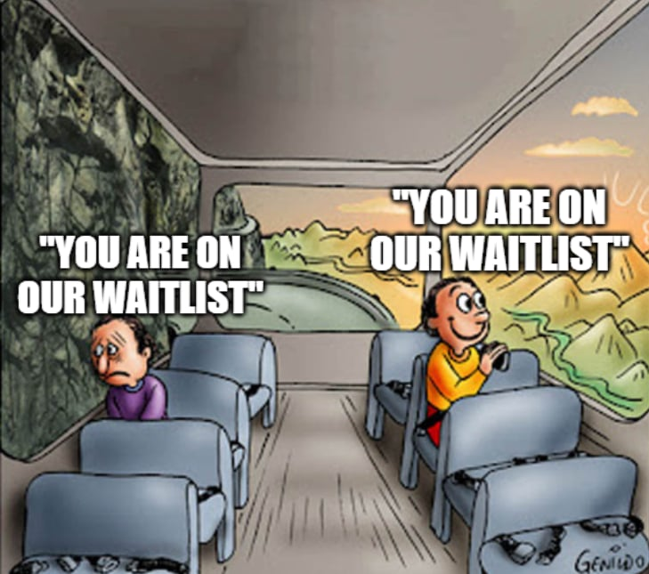

By reading this section, you will be able to answer the following questions:
- What should my mindset be after submitting my application?
- How do waitlists and funding waves work in PhD admissions?
- What are practical steps and strategies for navigating the waiting period?
Congratulations, you did all the hard work. The process after submitting your application can either be easy, or extremely difficult (mentally) depending what your mindset is.
My only key takeaway: Be patient. The game is almost complete, but nothing is done yet.
Starting in late January until April 15th, you will hear back from your programs. Some will ask you to do another round of interviews, and if you get the interview invitation(s), congratulations. However, what would likely happen is that you will not hear back from anywhere even until April.

Why? Funding is uncertain. Schools send out results on different waves, and first-wave applicants will likely wait until the last minute to turn down an offer. What does it mean?
Let’s say Alex, Bob, Charlie, Declan, and Emily all apply to:
- University of 67
- University of Where the Magic Happens
- University of Nerds
University of 67 really wants all of them, but they only have seats for 3 people. Then, in early February, they will send out the first wave result to Alex, Bob, and Charlie. Decland and Emily are on the waiting list. Alex’s first choice is University of 67, so she said YES! and turn down University of Where the Magic Happens and University of Nerds immediately. Bob and Charlie have until April 15th, and they have not heard back from any school. Bob loves University of Where the Magic Happens, and Charlie loves the University of Nerds, and thus, they wait.
February: The First Wave
From the Universities' Side
| University | Status |
|---|---|
| University of 67 | Alex: Committed Bob and Charlie: sent out offer but did not hear back from them Declan and Emily: hold off on waitlist |
| University of Where the Magic Happens | Still reading applications… |
| University of Nerds | Still reading applications… |
From our Friends' Perspective
| Applicant | Status |
|---|---|
| Alex | Committed to the University of 67 |
| Bob | Offer from the University of 67, but want the University of Where the Magic Happens, so decided to wait until April 15th. |
| Charlie | Offer from the University of 67, but want the University of Nerds, so decided to wait until April 15th. |
| Declan | No offer yet. |
| Emily | No offer yet. |
Then, in March, University of Where the Magic Happens release their first-wave result:
March: The Second Wave
From the Universities' Side
| University | Status |
|---|---|
| University of 67 | Alex: Committed. Bob: applicant declined offer. Charlie: sent out offer but did not hear back from them Declan: accept from waitlist Emily: hold off on waitlist |
| University of Where the Magic Happens | Alex: withdrew application before decision Bob, Charlie and Declan: sent out offer Emily: hold off on waitlist |
| University of Nerds | Still reading the application… |
From our Friends' Perspective
| Applicant | Status |
|---|---|
| Alex | Committed to the University of 67. |
| Bob | Declined offer from University of 67. Committed to University of Where the Magic Happens. |
| Charlie | Offer from the University of 67, but want the University of Nerds, so decided to wait until April 15th. |
| Declan | Offer from University of 67 and University of Where the Magic Happens. Schedule a school visit because they love both schools. |
| Emily | No offer yet. She is in full panic mode. |
On April 12, Declan said no to the University of 67 after their school visit. University of Nerds finally figured out their funding situation, and they only have… 1 seat. Charlie is whom they want!
Then, on April 13…
April 13: The Final Decisions
From the Universities' Side
| University | Status |
|---|---|
| University of 67 | Alex: Committed. Bob: applicant rejected offer. Charlie: sent out offer but did not hear back from them Declan: applicant rejected offer. Emily: accepted from waitlist |
| University of Where the Magic Happens | Alex: applicant withdrew application before decision. Bob: applicant declined offer. Charlie: committed. Declan: sent out offer Emily: accepted from waitlist |
| University of Nerds | Only Charlie gets the offer. |
From our Friends' Perspective
| Applicant | Status |
|---|---|
| Alex | Committed to the University of 67. |
| Bob | Committed to University of Where the Magic Happens. |
| Charlie | Committed to the University of Nerds. |
| Declan | Committed to University of Where the Magic Happens. |
| Emily | Get off the waitlist from University of 67 and Where the Magic Happens. Committed to the University of 67. |
That’s a long story and very unnecessary to illustrate the situation, but it’s my blog, so I would put it there.
In short, be patient! Keep your GPA good and keep doing research. Update any new awards to the committee.
A few tips for waiting:
- You can also browse the Reddit page (someone will usually have a spreadsheet so that the community will update their results in realtime) and GradCafe. However, they were extremely mentally exhausting for me, so I did not use them that much.
- Schedule one specific time (5:30 PM everyday) to check your email. Other than that, don’t think too much about your application. You have a life to live.
- Talk to your professors about your feelings. The process can be stressful, so it’s helpful to have someone to share your feelings with. You are not alone in this process.
- Finally, have a backup plan!
This is all I have to share with you about my application. If you like this series, make sure you share it with your friends. If you want to collaborate with me for future blogs or add on to this series, contact me!
I would not be able to go through this process without the unconditional support from my professors, mentors, and friends, so I would love to pay it forward. If you have any questions, feel free to contact me, though please allow me some time to respond. If I don’t respond to you in a week, feel free to send a follow up!
All the best for you, and hopefully I will see you, and work with you, in the future!